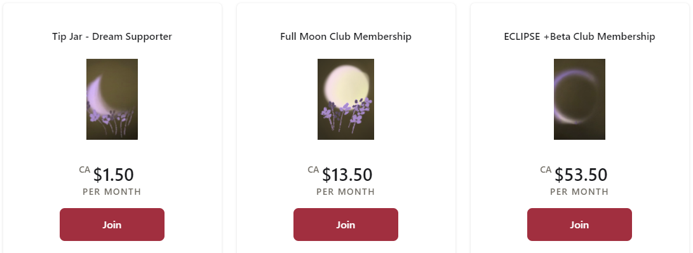

Barçın Müzik'e hoş geldiniz. Ziyaretiniz için teşekkür ederiz. Twitch yayın saatlerine göz atmayı unutmayın. Eğer YouTube kanalıma abone olursanız çok memnun olurum. Patreon patronlarıma çok teşekkür ederim.
Barçın Müzik'e hoş geldiniz. Ziyaretiniz için teşekkür ederiz. Twitch yayın saatlerine göz atmayı unutmayın. Eğer YouTube kanalıma abone olursanız çok memnun olurum. Patreon patronlarıma çok teşekkür ederim.
Welcome to Barçın Music. Thank you for your visit. Don't forget to check out the Twitch broadcast hours. I would be very happy if you subscribe to my YouTube channel. A big thank you to my Patreon bosses.
Welcome to Barçın Music. Thank you for your visit. Don't forget to check out the Twitch broadcast hours. I would be very happy if you subscribe to my YouTube channel. A big thank you to my Patreon bosses.


BARÇIN 19 Aralık 1999'da Ankara’da dünyaya geldi. Babasının evdeki kaset ve CD'leriyle küçük yaşta New Age ve dünya müzikleriyle tanıştı. Zamanla farklı müzik türlerine ilgi duyarak annesinin aile geleneği üzerine 8 yaşındayken öğrenmek istediği enstrüman olarak flütü seçti ve aralıklarla eğitimler aldı. 2016’da liseler arası müzik yarışmasında vokalist olarak sahnenin dışında ilk stüdyo deneyimini yaşadı. 2020 yılında kendi piyanosunu alarak küçüklük hayalini gerçekleştirdi ve internetten bulduğu ders videolarını izleyerek kendini geliştirdi. Duygu değişimlerini yansıtmaktan ve kendi duygularını müziğe etkileşimle birlikte dökmekten keyif alan BARÇIN, Twitch’te (twitch.tv/barcin) hem şarkı söylemekte hem de canlı yayınlarında çaldığı doğaçlama piyano parçalarını dijital platformlarda yayınlamak üzere kaydetmekte.
BARÇIN was born on December 19, 1999 in Ankara. He was introduced to New Age and world music at a young age with his father's cassettes and CDs at home. Over time, she became interested in different types of music and chose the flute as the instrument she wanted to learn at the age of 8, based on her mother's family tradition, and received training at intervals. In 2016, she had her first studio experience outside the stage as a vocalist in an inter-high school music competition. In 2020, he realized his childhood dream by buying his own piano and improved himself by watching the lesson videos he found on the internet. Enjoying reflecting his emotional changes and pouring his own emotions into music with interaction, BARÇIN both sings on Twitch (twitch.tv/barcin) and records the improvised piano pieces he plays in his live broadcasts to be broadcast on digital platforms.
Hakkımda
son haberler
Merhaba! Adım Barçın ve 22 yaşındayım Türkiye'den müzik ve oyun yayını yapıyorum!
-
Instagram
-
Spotify
-
soundcloud
-
YouTube
- Discord
-
İletişim :
barciniletisim@gmail.com
Patreon sayfamı açtım! Türkiye'de PayPal kullanamıyoruz, bana destek olmak ve özel Patreon avantajlarından yararlanmak istiyorsanız Dream Supporters, Full Moon Club veya ECLIPSE Club'a katılın ^^
• Mik - MXL 770 Condenser
• Piyano - Nux WK-400 Dijital
Piyano
• Flüt - Yamaha YFL-21N
• Gitar - Ibanez
GRGR121EX
• Ses arayüzü - PreSonus AudioBox USB 96
•
Ses arayüzü - Audient EVO4
• DAW - Ableton Live 10
Intro
• DAW - Studio One 5
About Me
latest news
Hello! My name is Barçın and I'm 22 y.o I'm streaming music & games from Turkey!
I launched my patreon page! We can't use paypal in Turkey, if you want to support me and experience special patreon benefits come join to the Dream Supporters, Full Moon Club or ECLIPSE Club ^^
• Mic - MXL 770 Condenser
• Piano - Nux WK-400 Dijital
Piyano
• Flute - Yamaha YFL-21N
• Guitar - Ibanez
GRGR121EX
• Audio Interface - PreSonus AudioBox USB 96
•
Audio Interface - Audient EVO4
• DAW - Ableton Live 10
Intro
• DAW - Studio One 5
